Step-by-Step Guide: Installing Rancher on Kubernetes from a Windows System
To install Rancher on Kubernetes using a Windows system, you can follow these step-by-step instructions. This guide assumes that you'll be setting up Kubernetes via Docker Desktop (which includes a Kubernetes cluster option), and then deploying Rancher using Helm. Rancher provides a GUI interface for managing Kubernetes clusters.
Prerequisites:
-
Windows 10/11 with WSL2 (Windows Subsystem for Linux) enabled: You’ll need this to run Linux-based tools.
-
Docker Desktop for Windows: Docker Desktop includes Kubernetes as an option.
-
kubectl (Kubernetes CLI): A tool to manage your Kubernetes cluster.
-
Helm (Kubernetes package manager): To install Rancher on Kubernetes.
Step 1: Enable WSL2 on Windows
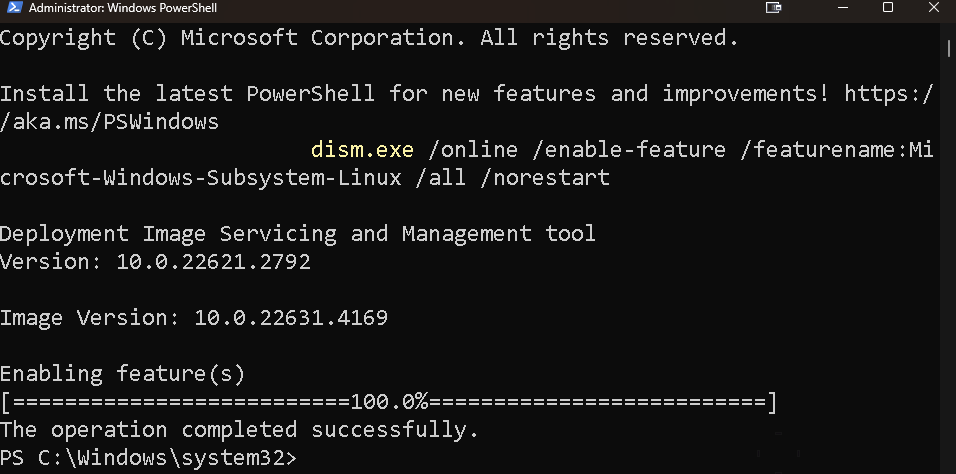
If you don't have WSL2 enabled, follow these steps:
- Open PowerShell as Administrator and run:
dism.exe /online /enable-feature /featurename:Microsoft-Windows-Subsystem-Linux /all /norestart
dism.exe /online /enable-feature /featurename:VirtualMachinePlatform /all /norestart
-
Download and install the Linux Kernel update package if required.
-
Set WSL 2 as the default version:
wsl --set-default-version 2
- Install a Linux distribution (e.g., Ubuntu) from the Microsoft Store.
Ubuntu Should run in the terminal !
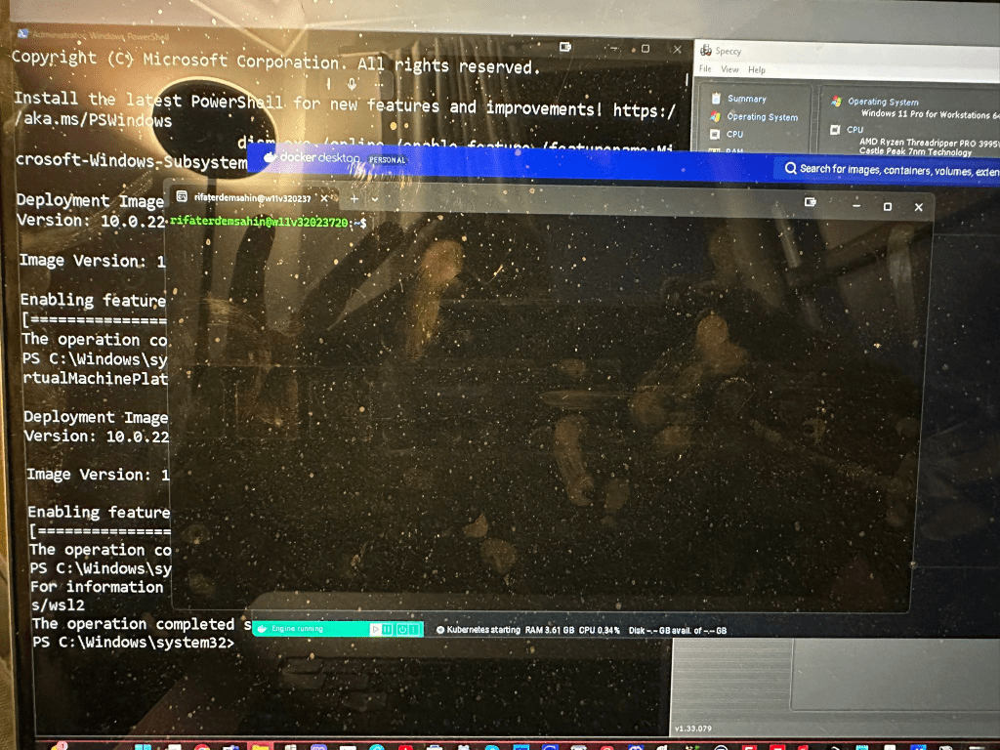
Step 2: Install Docker Desktop for Windows
-
Download and install Docker Desktop for Windows.
-
During the installation, ensure the option to enable Kubernetes is checked.
-
After installation, start Docker Desktop, and in the settings, go to Kubernetes and enable the Kubernetes option. Click Apply & Restart.
-
After Kubernetes is enabled, you can check the status by opening a terminal (PowerShell or Ubuntu via WSL) and running:
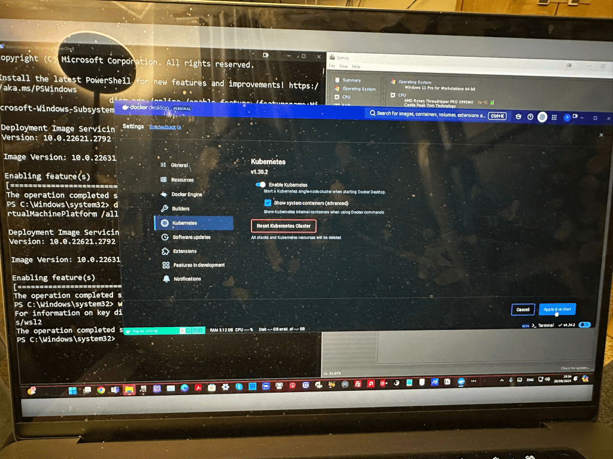
kubectl version --client
kubectl get nodes
If Kubernetes is running correctly, you’ll see your local node listed.
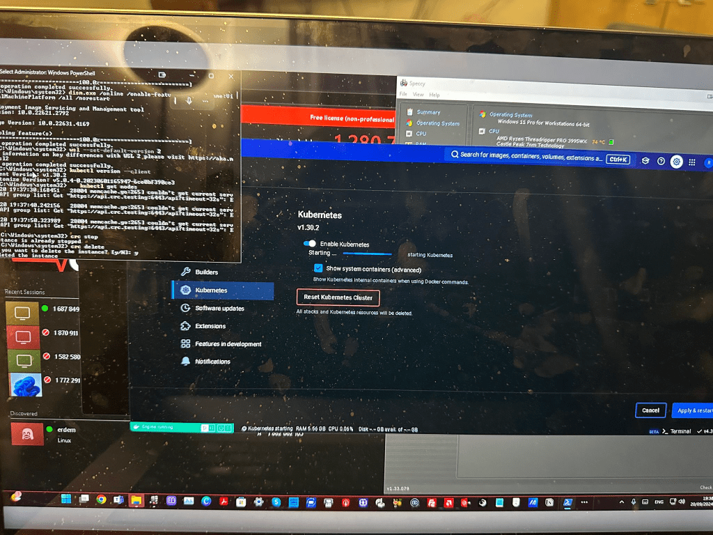
Step 3: Install kubectl and Helm
- Install kubectl:
If it’s not already installed, installkubectlby downloading the binary:
curl -LO "https://dl.k8s.io/release/$(curl -L -s https://dl.k8s.io/release/stable.txt)/bin/windows/amd64/kubectl.exe"
Add the folder where kubectl.exe is saved to your system's PATH.
-
Install Helm:
Download and install Helm for Windows by downloading the binary from the Helm GitHub releases page.
Extract the binary and add it to your system's PATH. -
Verify Helm installation by running:
helm version
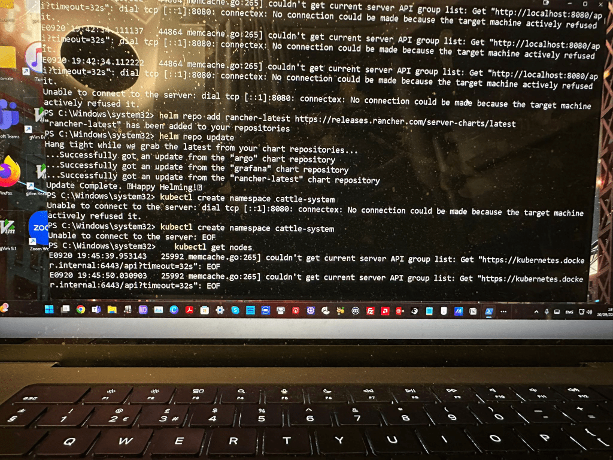
Step 4: Install Rancher on Kubernetes using Helm
- Add the Rancher Helm chart repository:
helm repo add rancher-latest https://releases.rancher.com/server-charts/latest
helm repo update
- Create a
cattle-systemnamespace for Rancher:
kubectl create namespace cattle-system
- Install Cert-Manager for managing SSL certificates (Rancher requires it):
kubectl apply --validate=false -f https://github.com/jetstack/cert-manager/releases/download/v1.10.1/cert-manager.yaml
Wait a few minutes for the cert-manager components to be up and running:
kubectl get pods --namespace cert-manager
- Install Rancher with Helm:
helm install rancher rancher-latest/rancher \
--namespace cattle-system \
--set hostname=
Replace <YOUR_RANCHER_HOSTNAME> with the hostname you want to use for Rancher. You can use a local IP for testing purposes, but it’s better to use a valid domain with DNS.
Here are a few examples of local setups for installing Rancher with Helm using different hostnames:
Example 1: Using a local IP for testing
If you're testing locally and don't have a domain name, you can use a local IP address (e.g., 192.168.1.100):
helm install rancher rancher-latest/rancher --namespace cattle-system --set hostname=192.168.3.100
helm install rancher rancher-latest/rancher \
--namespace cattle-system \
--set hostname=192.168.3.100
Here is a one-liner for installing Rancher using Helm:
helm install rancher rancher-latest/rancher --namespace cattle-system --set hostname=192.168.3.100
Example 2: Using localhost for development
For local development, you can set the hostname to localhost:
helm install rancher rancher-latest/rancher \
--namespace cattle-system \
--set hostname=localhost
helm install rancher rancher-latest/rancher --namespace cattle-system --set hostname=localhost
helm install rancher rancher-latest/rancher --namespace cattle-system --set hostname=localhost --atomic --force
Example 3: Using a custom domain (with DNS)
If you have a valid domain name, such as rancher.local.test, you would use it like this:
helm install rancher rancher-latest/rancher \
--namespace cattle-system \
--set hostname=rancher.local.test
In this case, you'd also need to update your /etc/hosts file (or your local DNS) to resolve rancher.local.test to your local IP address, such as:
192.168.3.100 rancher.local.test
Here’s the one-liner for installing Rancher with the specified hostname:
helm install rancher rancher-latest/rancher --namespace cattle-system --set hostname=rancher.local.test
Example 4: Using a wildcard domain for Rancher (if available)
If you're using a wildcard domain setup like *.rancher.local, you can configure it as follows:
helm install rancher rancher-latest/rancher \
--namespace cattle-system \
--set hostname=rancher.rancher.local
This is useful if you're using a wildcard DNS setup in a more complex environment.
Let me know if you need more examples or configurations!
- Check the Rancher installation:
kubectl -n cattle-system get deploy rancher
Ensure the pods are running:
kubectl get pods -n cattle-system
Step 5: Access Rancher
-
Once Rancher is up and running, access it via your web browser using the hostname or IP you provided. Rancher by default will use self-signed certificates, so you may need to accept an insecure certificate warning.
-
Follow the Rancher setup steps to create a password and start managing your Kubernetes clusters.
Optional: Expose Rancher with NodePort or Ingress
If you're testing locally without a proper DNS setup, you can expose Rancher with a NodePort service:
kubectl -n cattle-system edit svc rancher
Change the type: ClusterIP to type: NodePort. This will expose Rancher on a port of the Kubernetes node.
Now, access Rancher via http://<YOUR_NODE_IP>:<NODEPORT>.
Step 6: (Optional) Configure SSL
For a production setup, you should use a valid SSL certificate. You can use Let's Encrypt or another certificate provider. Rancher provides detailed documentation on how to configure this with the Helm chart.
That's it! You now have Rancher running on Kubernetes installed from a Windows system.
🔗 Connect with me:
-
💼 LinkedIn: https://www.linkedin.com/in/rifaterdemsahin/
-
🐦 Twitter: https://x.com/rifaterdemsahin
-
🎥 YouTube: https://www.youtube.com/@RifatErdemSahin
-
💻 GitHub: https://github.com/rifaterdemsahin
The error you're encountering when running kubectl get nodes suggests that kubectl is unable to connect to the Kubernetes API server. The error messages like couldn't get current server API group list and Unable to connect to the server: EOF typically indicate a networking issue or misconfiguration in your Kubernetes setup.
Here are some potential reasons and troubleshooting steps:
1. Kubernetes Cluster is Not Running
-
If you are using a local Kubernetes solution (like Docker Desktop with Kubernetes, Minikube, or CRC), ensure the Kubernetes cluster is actually running.
-
You can check the status of Docker Desktop Kubernetes or Minikube by running:
bash minikube status
Or check Docker Desktop’s Kubernetes settings to confirm that it’s running.
2. Kubeconfig Configuration Issues
-
The
kubectlcommand relies on thekubeconfigfile to know which cluster to connect to. Check if the configuration is set correctly:
bash **kubectl config view** -
If it’s pointing to the wrong cluster or missing details, you can switch the context:
bash kubectl config use-context <context-name>
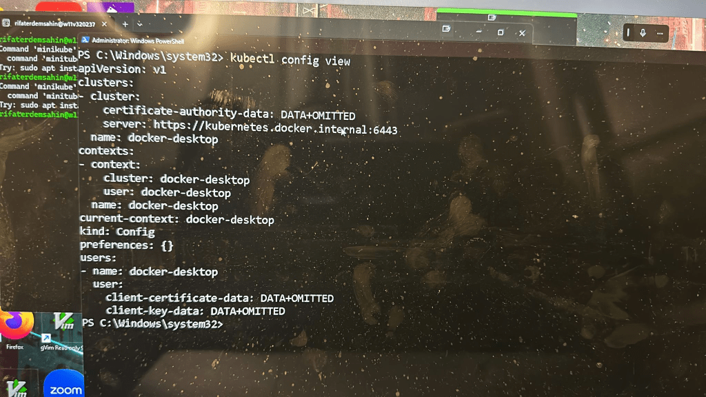
3. Port Forwarding/Networking Issue
-
Since the error points to
https://kubernetes.docker.internal:6443, it looks like you're using a local cluster through Docker. There might be a networking issue between your machine and the Kubernetes API server. -
Ensure Docker is correctly configured to expose the Kubernetes API server on
6443and that there is no firewall or security software blocking access to that port.
4. TLS Certificates or Credentials Issue
-
Sometimes, connectivity issues stem from expired or misconfigured certificates. Make sure that your Kubernetes credentials (stored in the
kubeconfig) are valid and haven't expired. -
You can regenerate the
kubeconfigor ensure the correct certificates are in place.
5. Restart Docker Desktop or Minikube
- If you’re using Docker Desktop or Minikube, sometimes simply restarting the Kubernetes environment can resolve the issue:
For Docker Desktop: Toggle the Kubernetes feature off and on again in the settings.
- For Minikube: Run
minikube stopfollowed byminikube start.
6. Check API Server Logs
- You can check the logs of the Kubernetes API server to identify if it's throwing any errors. If you're using Minikube, run:
bash minikube logs
By going through these steps, you should be able to identify the root cause of the connectivity issue and restore access to the Kubernetes API server.
No, you do not need Minikube if you are already using Docker Desktop with Kubernetes. Docker Desktop has its own built-in Kubernetes environment, and Minikube is typically used for setting up a Kubernetes cluster locally when Docker Desktop’s Kubernetes is not in use.
Here’s a quick breakdown:
-
Docker Desktop with Kubernetes: This provides a simple, built-in Kubernetes environment on your local machine. It allows you to manage containers and Kubernetes without needing additional tools like Minikube.
-
Minikube: Minikube is another tool that sets up a local Kubernetes cluster, often used when you want to create a standalone Kubernetes environment without Docker Desktop, or when you need specific Kubernetes versions or configurations.
In your case:
Since your kubectl config view output shows the context as docker-desktop (which points to Docker Desktop’s Kubernetes), you are already using Docker Desktop’s Kubernetes. You do not need Minikube unless you have a specific reason to run a separate Kubernetes cluster.
To resolve the kubectl issues, focus on ensuring that Docker Desktop's Kubernetes is enabled and running properly.
Running One > No errors > After Starting
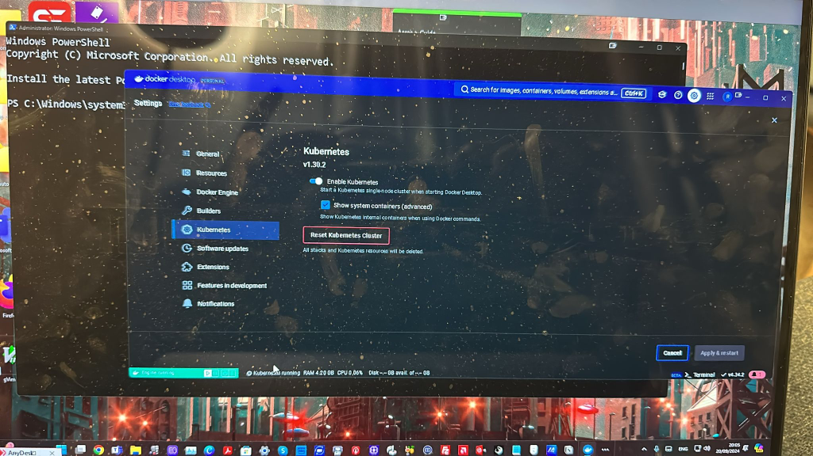
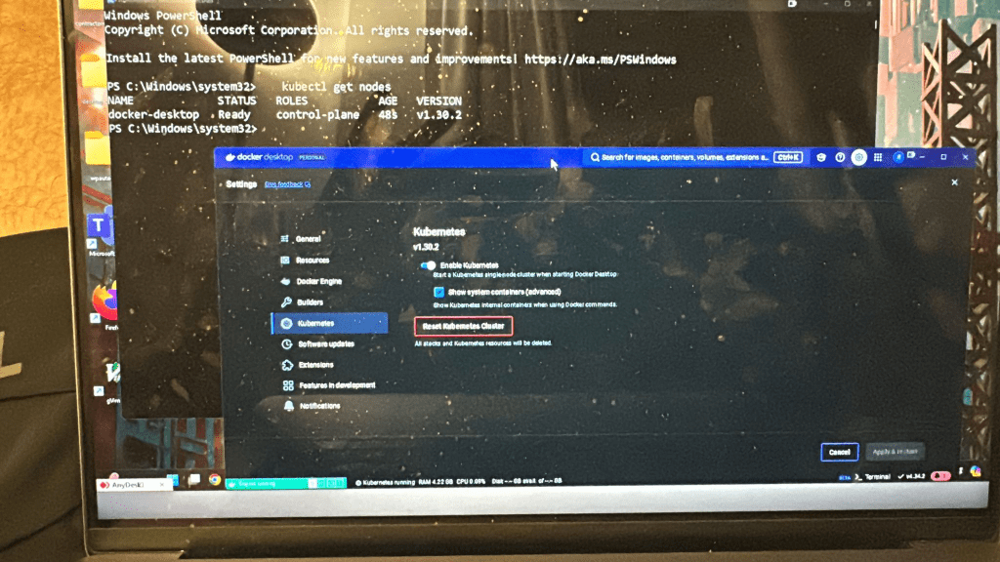
Rancher Values
In Docker Containers Logs
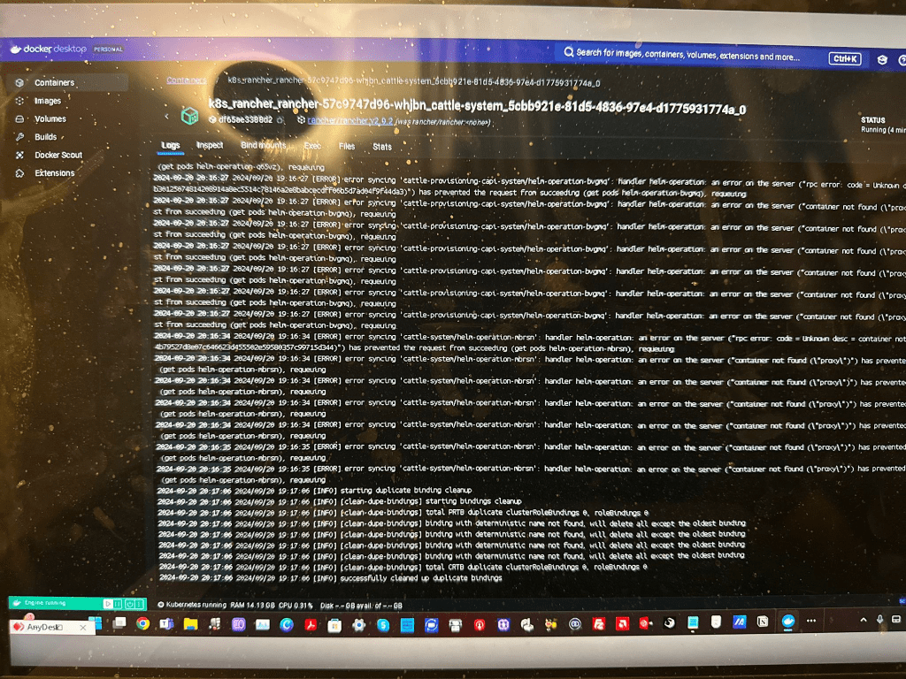
Containers for Kubernetes
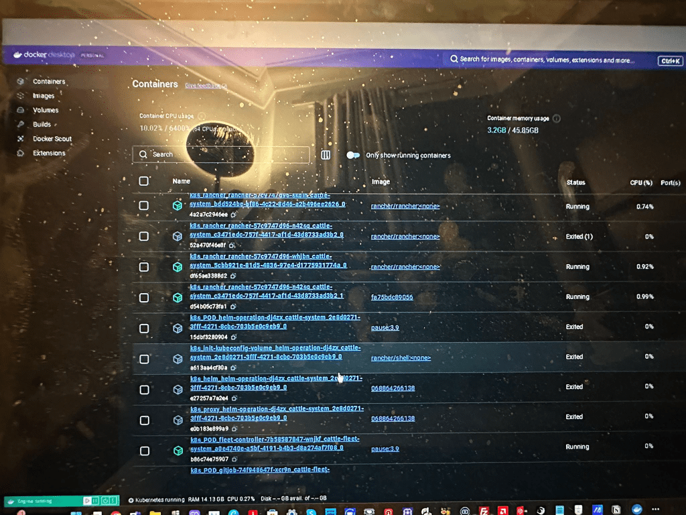
After updates
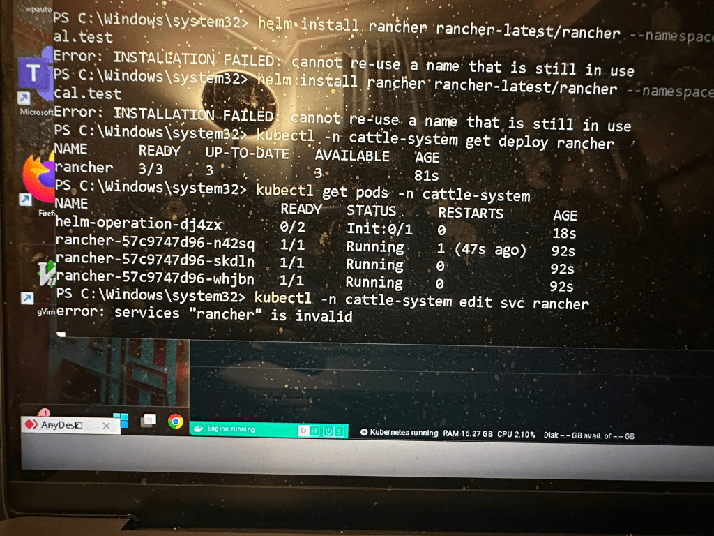
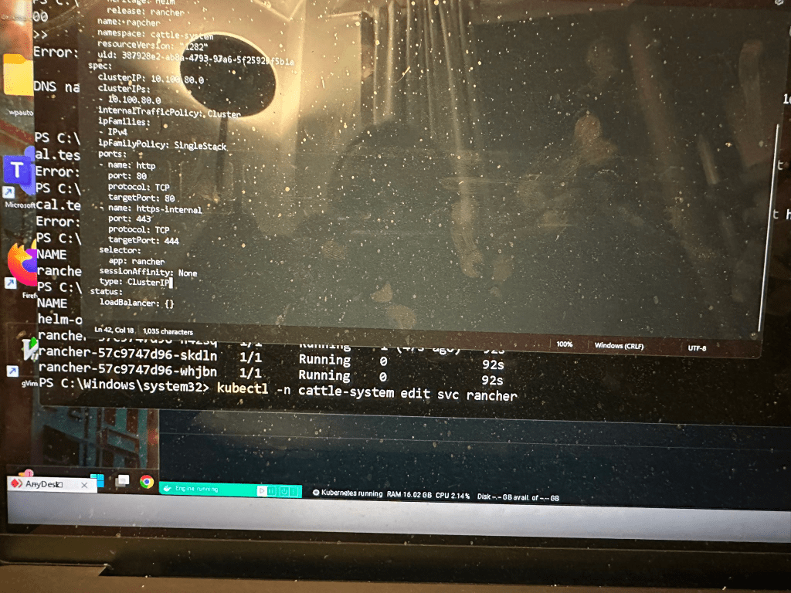
Original Value
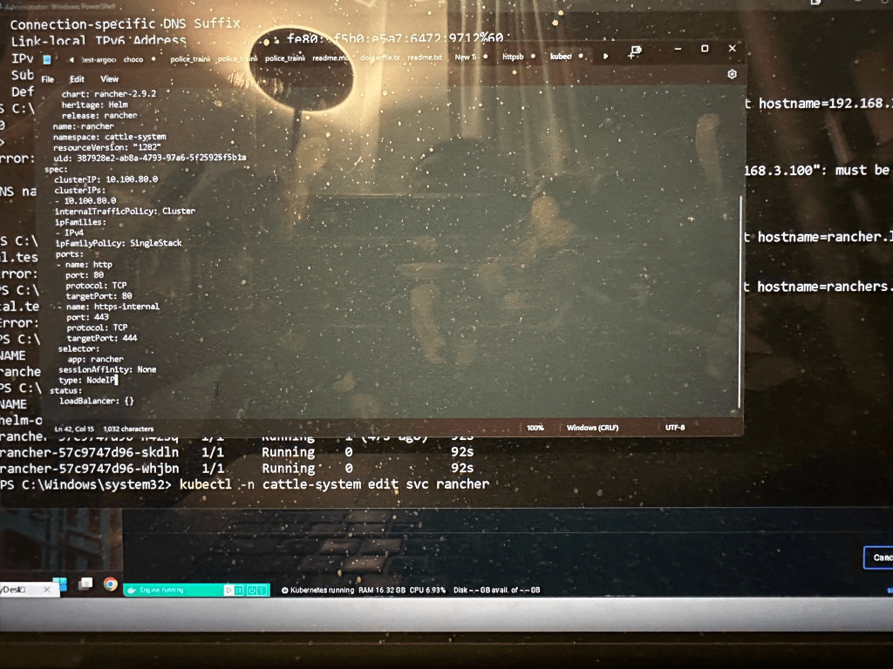
Running Pods
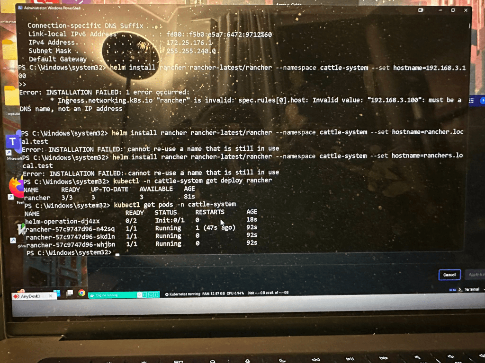
Ip Not Working
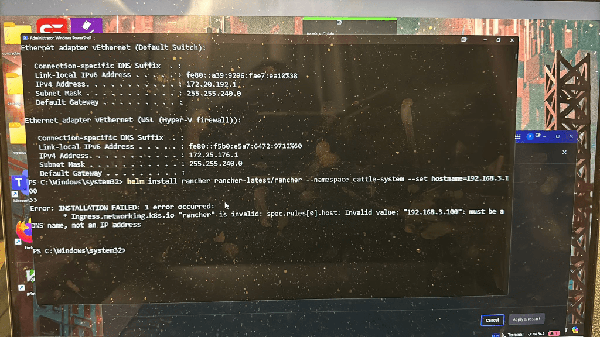
Check the current ip
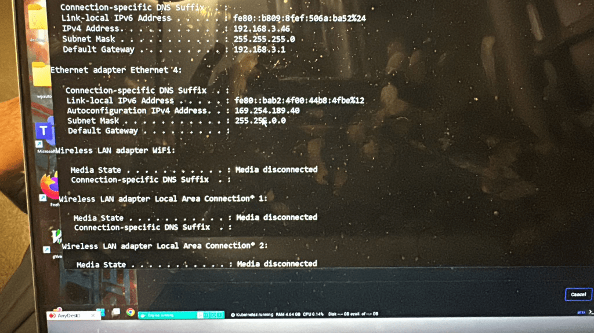
Error for Rancher!
The error you're encountering (services "rancher" is invalid) when trying to edit the Rancher service in the cattle-system namespace suggests there may be a problem with the Rancher service configuration. Here's a list of steps you can take to troubleshoot the issue:
- Check the service details:
Run the following command to check the details of the Rancher service and verify if it exists and is correctly configured:
kubectl get svc -n cattle-system
This will list all services in the cattle-system namespace. Ensure that the service named rancher is listed there. If it's not present, it may need to be recreated.
- Inspect the service YAML:
If therancherservice is listed, try inspecting its YAML without editing it:
kubectl get svc rancher -n cattle-system -o yaml
This will display the full configuration of the service in YAML format. Look for any potential issues, such as invalid fields, missing values, or misconfigurations.
-
Check service status:
Review the status of the pods and ensure that Rancher is running properly. You already checked the pod status, and all three Rancher pods are in theRunningstate, so the pods themselves seem healthy. -
Check for logs:
View logs for one of the running Rancher pods to see if there are any errors that might give insight into why the service isn't behaving as expected:
kubectl logs
Replace <pod-name> with one of the Rancher pod names (e.g., rancher-57c9747d96-n42sq).
- Check for Kubernetes API server issues:
Sometimes, editing services may fail due to issues with the Kubernetes API server or its connectivity. Try running:
kubectl version
to ensure that your kubectl client and server versions are compatible and there aren't any connectivity issues.
- Manual editing:
If the edit command is failing, you can manually edit the service configuration by downloading the YAML, modifying it locally, and applying the changes:
kubectl get svc rancher -n cattle-system -o yaml > rancher-service.yaml
Edit rancher-service.yaml in a text editor and then apply the changes:
kubectl apply -f rancher-service.yaml -n cattle-system
If none of these steps resolve the issue, there might be a deeper issue with the service configuration or Rancher itself that would require further investigation into its logs and possibly recreating the service from scratch.
Rancher Debug
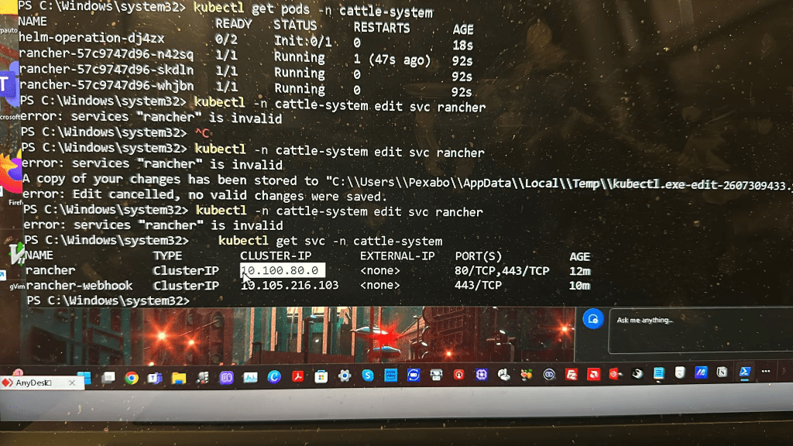
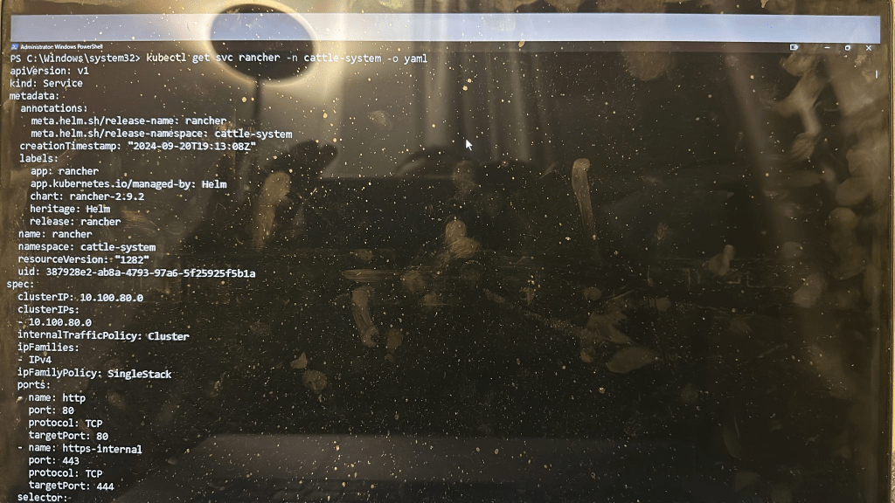
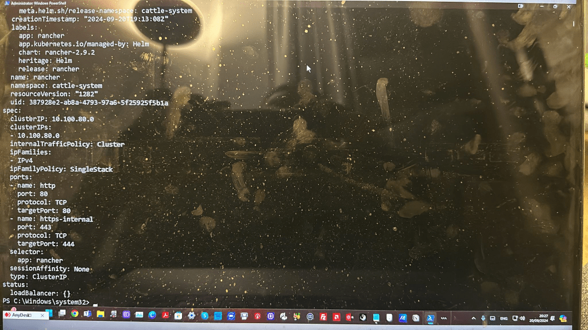
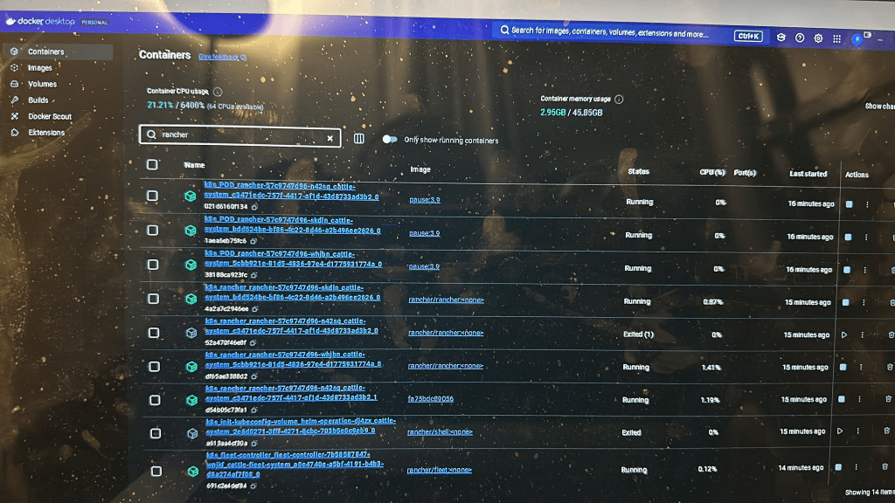
It looks like Rancher encountered a fatal error while starting, and the specific issue mentioned is that the namespace "fleet-local" already exists. This error can occur if a resource, like a namespace or service, is being recreated during startup but was not properly removed or cleaned up from a previous deployment.
Here are some possible steps you could take to resolve the issue:
-
Check the existing namespaces:
Runkubectl get namespacesto check if "fleet-local" already exists. -
Delete or modify the conflicting namespace:
If the "fleet-local" namespace is no longer needed, you can delete it with the command:
kubectl delete namespace fleet-local
If it's in use, you might need to investigate why it's conflicting and adjust the deployment configuration to avoid recreating an existing namespace.
- Restart Rancher:
After resolving the namespace issue, restart Rancher to see if the error is fixed.
If you're managing this in a production environment, ensure that any deletion or modification doesn't impact services running in the "fleet-local" namespace. If the issue persists, checking Rancher logs or looking into specific configuration issues with Fleet might also help debug further.
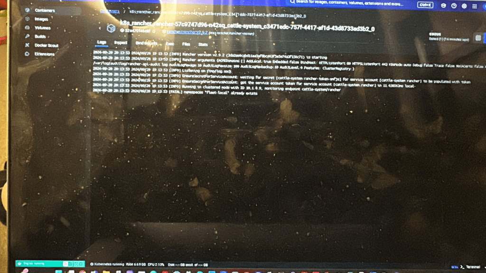
If Rancher is set up inside Kubernetes on Docker (Docker Desktop Kubernetes or similar), you can follow these steps to find the Rancher URL for logging in:
1. Check the Service for Rancher
Since Rancher is installed on Kubernetes, it will be exposed via a service. Use this command to check the services:
kubectl -n cattle-system get svc
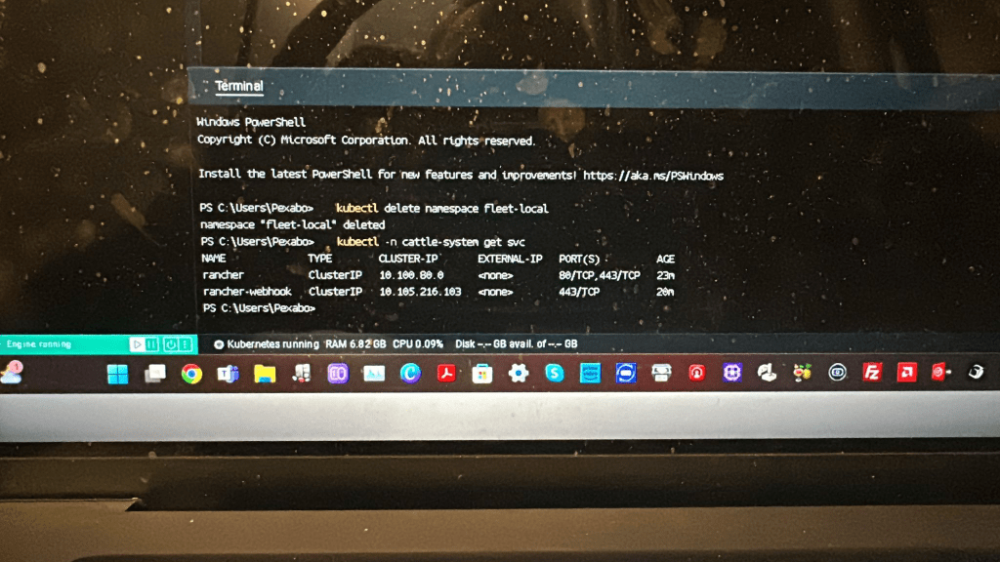
Look for a service named rancher. If it's using a **LoadBalancer**, you’ll see an external IP under the EXTERNAL-IP column. If it’s using a **ClusterIP**, you may need to port-forward to access it.
Example output:
NAME TYPE CLUSTER-IP EXTERNAL-IP PORT(S)
rancher LoadBalancer 10.0.0.15 192.168.1.100 80:30778/TCP
If it’s using a LoadBalancer, you can use the EXTERNAL-IP (e.g., 192.168.1.100) and access it at http://EXTERNAL-IP or https://EXTERNAL-IP (depending on your setup).
2. Port-Forward if ClusterIP is used
If your service type is ClusterIP, you will need to use port-forwarding to access Rancher. Use the following command to set up port forwarding from your local machine to the Rancher service:
kubectl -n cattle-system port-forward svc/rancher 8080:80
Now, Rancher will be accessible at http://localhost:8080.
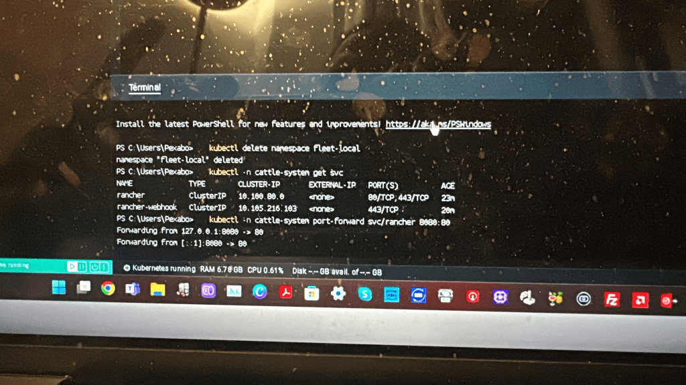
3. Check Logs for Rancher URL
If you’re still unsure of the URL, you can check the logs of the Rancher container. Use the following command to see the logs:
kubectl -n cattle-system logs -l app=rancher
The logs may contain the startup details and the exact URL to access Rancher.
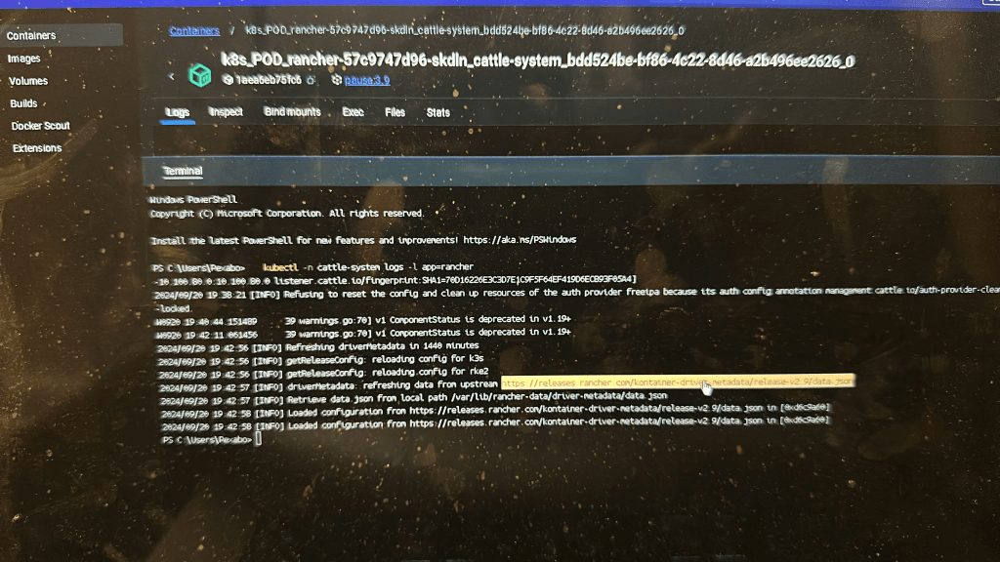
4. Accessing Rancher
Once you have the correct IP or are using port-forwarding, open your browser and navigate to the Rancher URL (e.g., http://localhost:8080 or the external IP obtained from the kubectl get svc command).
Let me know if you need further assistance!
Helm force reinstall
The error "cannot re-use a name that is still in use" occurs when you're trying to install a Helm release with a name that already exists. This usually means that the Helm release rancher is already deployed in the cattle-system namespace, even if the installation failed earlier.
To resolve this, you have a few options:
1. Check for Existing Helm Releases:
First, check if there is an existing Helm release with the name rancher:
helm list --namespace cattle-system
If you see the release, you can either upgrade it or uninstall it.
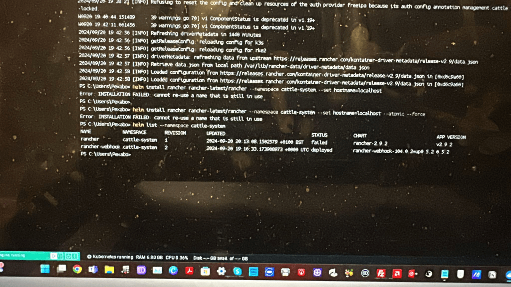
2. Uninstall the Existing Release:
If you want to remove the existing release and start fresh, uninstall it:
helm uninstall rancher --namespace cattle-system
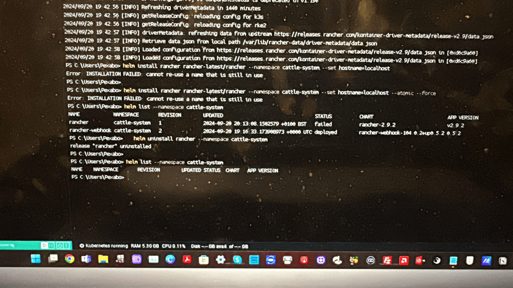
Then, retry the installation:
helm install rancher rancher-latest/rancher --namespace cattle-system --set hostname=localhost
3. Upgrade the Existing Release:
If you prefer to upgrade the existing installation instead of uninstalling, use:
helm upgrade rancher rancher-latest/rancher --namespace cattle-system --set hostname=localhost
Let me know how it goes!
To get the URL for your Rancher installation, follow these steps:
1. Check the Rancher Service:
Use the following command to find the external URL:
kubectl get services --namespace cattle-system
Look for the rancher service, which might be exposed as a LoadBalancer or NodePort. Depending on your Kubernetes setup, this will show the URL or IP address you need.
Namespace and Deployed
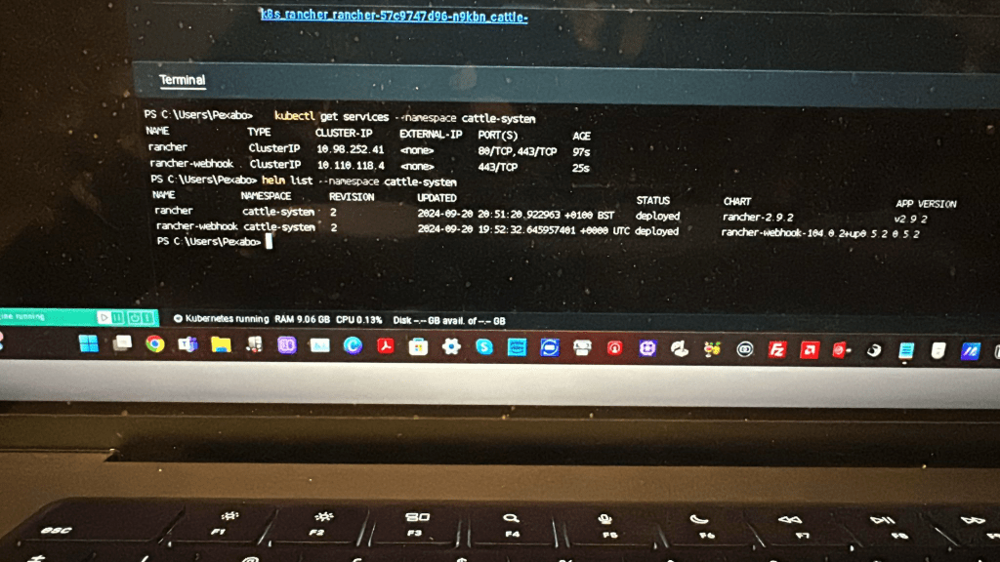
2. If using LoadBalancer:
If the service type is LoadBalancer, you should see an external IP in the EXTERNAL-IP column. For example:
NAME TYPE CLUSTER-IP EXTERNAL-IP PORT(S) AGE
rancher LoadBalancer 10.43.0.234 35.192.0.10 80:31511/TCP 10m
You can then access Rancher at:
http://
In the example above, the URL would be http://35.192.0.10.
3. If using NodePort:
If the service is of type NodePort, you will need to use the IP of one of your cluster nodes and the port listed in the PORT(S) column. For example:
NAME TYPE CLUSTER-IP EXTERNAL-IP PORT(S) AGE
rancher NodePort 10.43.0.234
Here, you can access Rancher at:
http://
Replace <NODE-IP> with the IP address of your Kubernetes node.
4. If using Ingress:
If you’ve set up an ingress controller and configured a hostname (like localhost in your case), you can access Rancher via that hostname:
http://localhost
If you’re running this locally, make sure the hostname resolves correctly by adding an entry to your /etc/hosts or setting up a DNS.
Check Installation Logs:
After installation, Helm usually outputs instructions on how to access Rancher. You can check these logs by running:
helm status rancher --namespace cattle-system
This should help you get to the correct URL for Rancher. Let me know if you need more assistance!
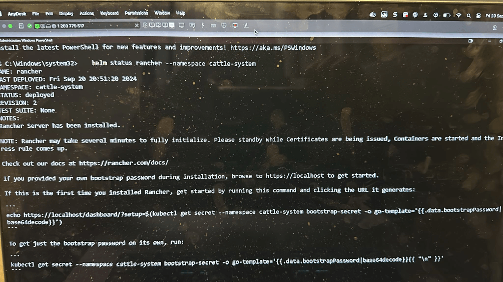
After installs
The error you're encountering happens because port 8080 on your local machine is already in use by another process. Here are a few steps you can take to resolve this issue:
Option 1: Use a Different Port
You can forward to a different local port that's not in use. For example, if 8080 is occupied, you could try another port like 8081:
kubectl -n cattle-system port-forward svc/rancher 8081:80
This will forward port 80 of the Rancher service to your local port 8081.
Option 2: Identify and Kill the Process Using Port 8080
If you want to free up port 8080, you can identify the process using that port and stop it. Here’s how to do that:
For Windows:
-
Open a command prompt or PowerShell and run the following command to find the process using port 8080:
netstat -aon | findstr :8080This will return the process ID (PID) of the process using port 8080. -
Once you have the PID, you can kill the process by running:
taskkill /PID <PID> /FReplace<PID>with the actual process ID.
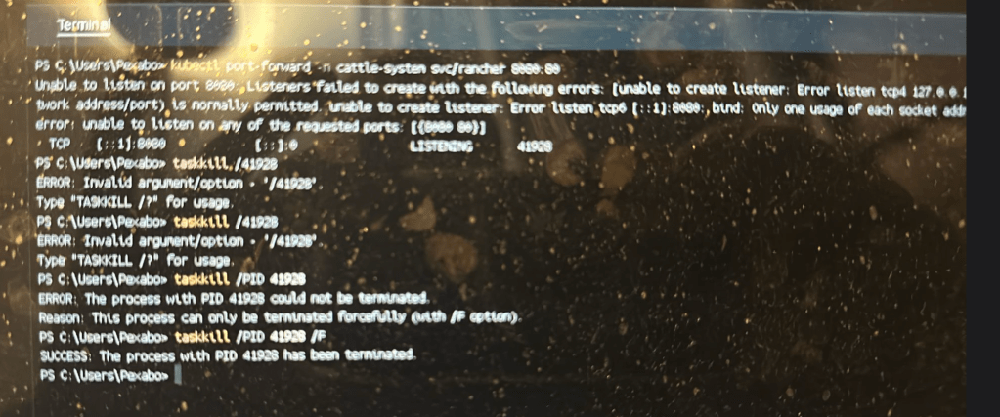
Option 3: Check for Existing Port Forwarding
Ensure there’s no existing kubectl port-forwarding session already running on port 8080. You can check for running kubectl processes and stop them if needed.
ClusterIP Convert
kubectl -n cattle-system edit svc rancher
`# Please edit the object below. Lines beginning with a '#' will be ignored,
and an empty file will abort the edit. If an error occurs while saving this file will be
reopened with the relevant failures.
apiVersion: v1
kind: Service
metadata:
annotations:
meta.helm.sh/release-name: rancher
meta.helm.sh/release-namespace: cattle-system
creationTimestamp: "2024-09-20T19:50:53Z"
labels:
app: rancher
app.kubernetes.io/managed-by: Helm
chart: rancher-2.9.2
heritage: Helm
release: rancher
name: rancher
namespace: cattle-system
resourceVersion: "11310"
uid: 788c1e8d-1b0c-44ca-9c24-64efd548ae1b
spec:
clusterIP: 10.98.252.41
clusterIPs:
- 10.98.252.41
internalTrafficPolicy: Cluster
ipFamilies:
- IPv4
ipFamilyPolicy: SingleStack
ports:
- name: http
port: 80
protocol: TCP
targetPort: 80
- name: https-internal
port: 443
protocol: TCP
targetPort: 444
selector:
app: rancher
sessionAffinity: None
type: ClusterIP
status:
loadBalancer: {}`
It looks like the service is already of type ClusterIP, which is what you need. The type ClusterIP is specified in the following part of the YAML:
type: ClusterIP
There is no need to modify this configuration if you intend to keep the service as a ClusterIP. However, if you're looking to adjust something else, feel free to clarify!
CHANGE
To access a service of type ClusterIP from within the Kubernetes cluster, you have several options. Since ClusterIP services are only accessible from inside the cluster (they don't expose the service externally by default), here's how you can access it:
1. Access via Pod (within the cluster)
You can access the service from any pod inside the cluster using the service name and the port defined in your Service object.
For example, if you have a pod running inside the cluster, you can access the service like this:
-
Service Name:
rancher(as defined in your spec) -
Namespace:
cattle-system -
Port:
80(for HTTP) or443(for HTTPS)
If you are inside a pod, you can use curl or similar tools to access the service:
curl http://rancher.cattle-system.svc.cluster.local:80
In this example, rancher.cattle-system.svc.cluster.local is the DNS name for the service, and the 80 is the port defined in your YAML file.
2. Port Forwarding (from local to cluster)
If you want to access the ClusterIP service from your local machine for testing, you can use kubectl port-forward. This allows you to forward a port from your local machine to the service within the cluster.
For example, to access the HTTP service (port 80) from your local machine, you can run:
kubectl port-forward -n cattle-system svc/rancher 8080:80
This forwards your local port 8080 to port 80 of the rancher service. Then, you can access the service in your browser or via curl:
http://localhost:8080
3. Using a Debug Pod
If you don't have a running pod but want to debug the connectivity within the cluster, you can deploy a temporary pod to check the service.
- Run a temporary pod:
kubectl run curlpod --image=radial/busyboxplus:curl -i --tty --rm
- From inside that pod, try accessing the service:
curl http://rancher.cattle-system.svc.cluster.local:80
4. Access via a NodePort or LoadBalancer (if external access is required)
If you need to access the service from outside the cluster (e.g., from your browser or an external machine), you'll need to change the Service type to NodePort or LoadBalancer.
Here's an example of how to change it to NodePort:
spec:
type: NodePort
ports:
- port: 80
targetPort: 80
nodePort: 30080 # Optional: you can set a custom NodePort here
For LoadBalancer (assuming your cluster supports this), change it like so:
spec:
type: LoadBalancer
5. Using Ingress (Optional for HTTP/HTTPS Services)
If you plan to expose the rancher service externally and want to use a domain name, you can set up an Ingress resource. The ingress controller will route traffic to your ClusterIP service.
Let me know if you want more details about any specific method!
Imported from rifaterdemsahin.com · 2024